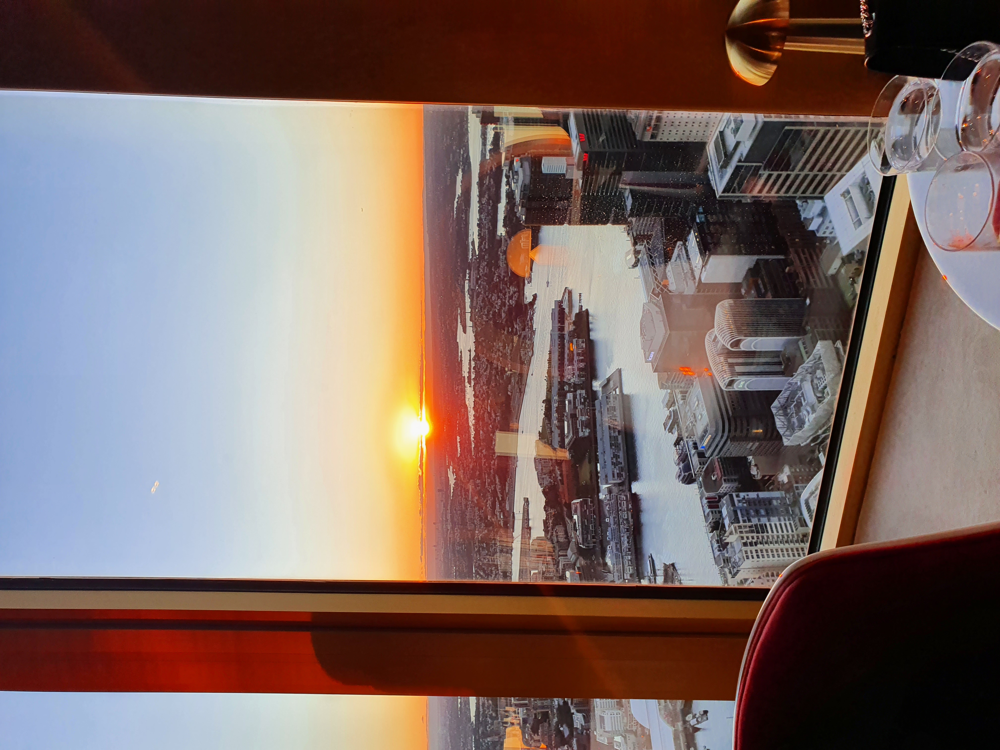
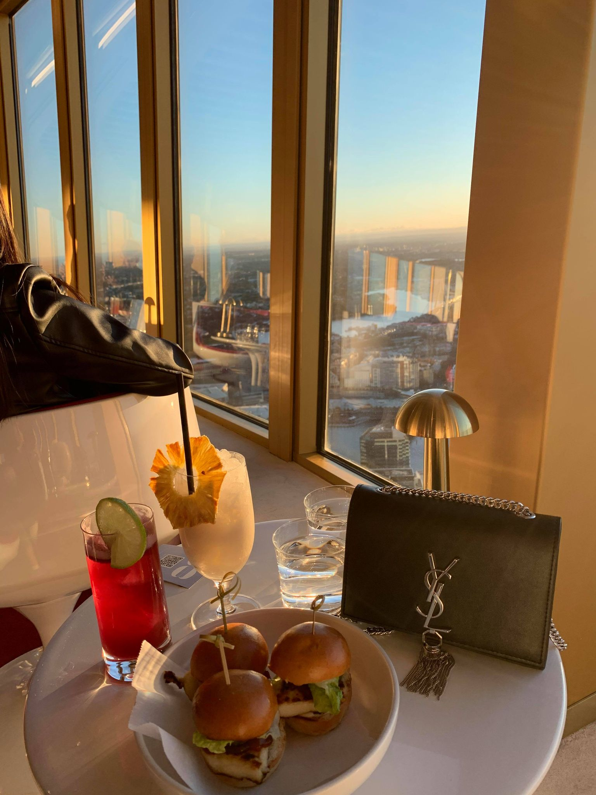
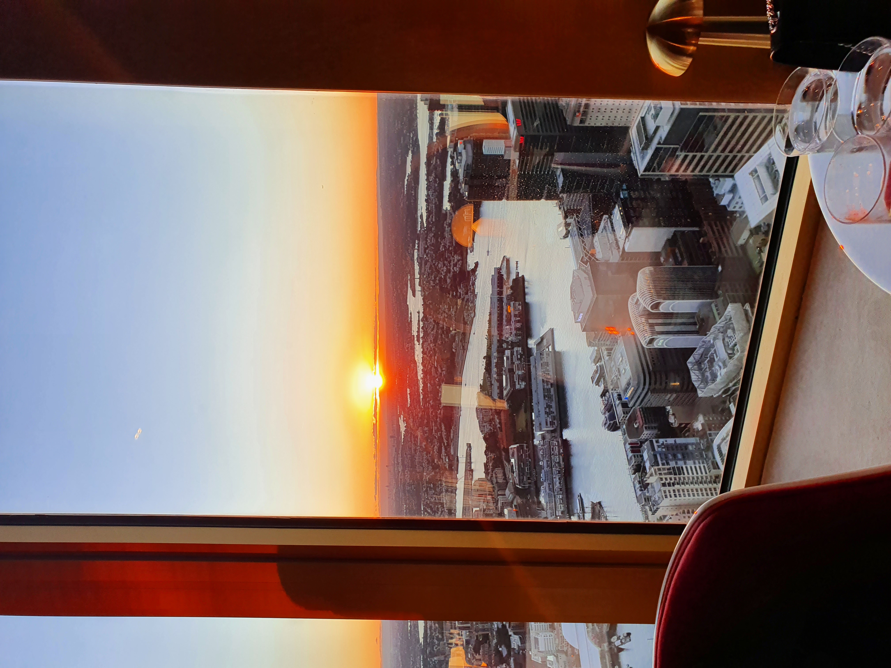
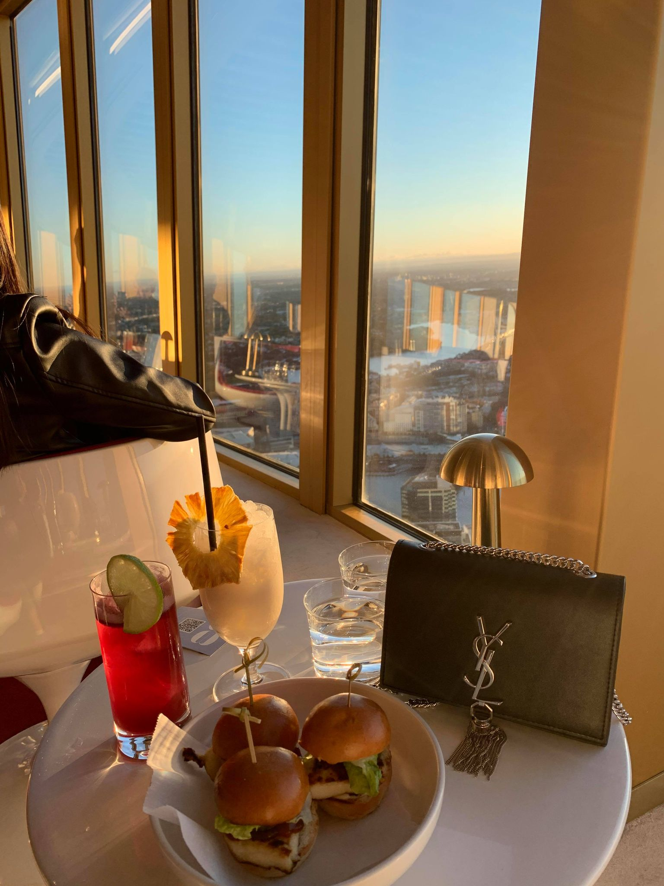

Loving Hut
Price Range: $$
227 Cabramatta Rd W, Cabramatta NSW 2166
One of my all-time favourites. The quality of the food is consistent, service is lovely and such affordable prices. They offer a wide selection of choices in which I'm sure that you will find several dishes that you will enjoy. My regular go-to dish is a tomato noodle soup with vermicelli noodles, accompanied by a selection of toppings.


 


